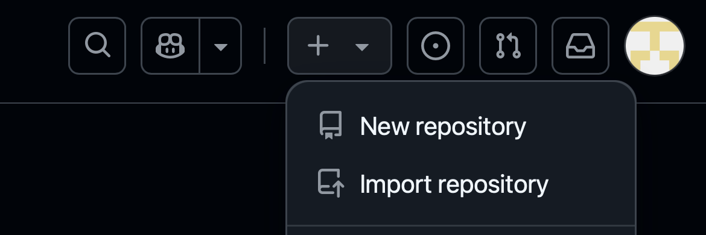

ğŸ› ï¸ Cómo instalar Git y usar GitHub
¡Hola! 👋 Vamos a configurar Git en tu computadora y conectarlo a GitHub. Es más fácil de lo que crees, ¡solo sigue los pasos a continuación!
💻 Instalando Git en tu computadora
Elige tu sistema operativo a continuación para ver las instrucciones correctas 👇
- Ve a https://git-scm.com/download/win
- Descarga el archivo y ejecútalo.
- Haz clic en "Siguiente" durante la instalación; la configuración predeterminada es perfecta.
- ¡Listo! 🎉
- Abre la aplicación Terminal (busca "Terminal").
- Escribe esto y presiona Enter:
git --version - Si dice que Git no está instalado, escribe:
xcode-select --install - Sigue las instrucciones que aparezcan. ✅
- Abre Terminal.
- Escribe los siguientes comandos uno por uno y presiona Enter:
sudo apt-get update
sudo apt-get install git
✍️ Configuración inicial de Git
Dile a Git quién eres
Después de instalar Git, abre Git Bash (en Windows) o la Terminal (en Mac o Linux). Luego escribe lo siguiente 👇
🖥️ Escribe en la terminal:
git config --global user.name "Tu Nombre"
git config --global user.email "tu.email@example.com"
Esto le dice a Git cómo firmar tus proyectos (como si dejaras tu firma digital).
🔐 ¿Qué pasa la primera vez que usas git clone?
Cuando intentas copiar (o "clonar") un proyecto desde GitHub por primera vez, Git necesita saber que realmente eres tú. Esto se llama autenticación, y funciona de forma diferente según tu computadora:
- Abre Git Bash y escribe lo siguiente para clonar tu repositorio:
git clone https://github.com/tu-usuario/tu-repositorio.git
- Se abrirá una ventana del navegador automáticamente.
- Inicia sesión en GitHub con tu usuario y contraseña, como si entraras normalmente a la página.
- ¡Listo! 🉠Git recordará que eres tú y no volverá a pedir tu contraseña cada vez que uses Git.
✅ Esto es posible gracias a una herramienta llamada Git Credential Manager (GCM), que ya viene incluida en Git para Windows. Guarda tus credenciales de forma segura en tu computadora.
-
Abre tu navegador y ve a esta página:
https://github.com/settings/tokens -
Haz clic en "Generate new token".
-
- Ponle una nota para recordar de qué es el token (por ejemplo, "Para acceso a repositorios").
- Elige una duración (por ejemplo, 90 dÃas). Al finalizar los 90 dÃas, deberás crear un nuevo token y repetir estos pasos. Si no quieres que expire, puedes indicar que no tenga fecha de expiración. âš ï¸ Esto no se recomienda por motivos de seguridad, pero tú decides si te queda más cómodo.
- Marca la opción
repopara darle permisos y que funcione con tus proyectos.
Toma en cuenta esto para crearlo:

-
Haz clic en "Generate token" al final.
🔠Copia ese código que aparece (¡guárdalo o pégalo en un lugar seguro porque luego no se puede recuperar!). -
Luego abre la Terminal y escribe:
Esto le dice a Git que guarde tus credenciales para que no tengas que estar escribiendo tu token cada vez que interactúas con el repositorio de GitHub. Luego, intenta clonar tu repositorio:git config --global credential.helper storegit clone https://github.com/tu-usuario/tu-repositorio.git -
Git te va a pedir:
- Tu nombre de usuario de GitHub
- Tu token (ese código largo que copiaste antes). Cuando pegues el token, no verás nada en la terminal, y eso es completamente normal. El token se pegó, pero la terminal no lo muestra porque se trata como una contraseña.
-
Listo! Ahora puedes hacer
git push,git clone, etc. sin problema.
âš ï¸ Esto guardará tu token en un archivo de texto dentro de tu computadora. Funciona bien si es tu PC personal, pero no lo hagas en computadoras públicas o compartidas.
-
Abre tu navegador y ve a esta página:
https://github.com/settings/tokens -
Haz clic en "Generate new token".
-
- Ponle una nota para recordar de qué es el token (por ejemplo, "Para acceso a repositorios").
- Elige una duración (por ejemplo, 90 dÃas). Al finalizar los 90 dÃas, deberás crear un nuevo token y repetir estos pasos. Si no quieres que expire, puedes indicar que no tenga fecha de expiración. âš ï¸ Esto no se recomienda por motivos de seguridad, pero tú decides si te queda más cómodo.
- Marca la opción
repopara darle permisos y que funcione con tus proyectos.
Toma en cuenta esto para crearlo:
-
Haz clic en "Generate token" al final.
🔠Copia ese código que aparece (¡guárdalo o pégalo en un lugar seguro porque luego no se puede recuperar!). -
Luego abre la Terminal y escribe:
Esto le dice a Git que guarde tus credenciales para que no tengas que estar escribiendo tu token cada vez que interactúas con el repositorio de GitHub. Luego, intenta clonar tu repositorio:git config --global credential.helper storegit clone https://github.com/tu-usuario/tu-repositorio.git -
Git te va a pedir:
- Tu nombre de usuario de GitHub
- Tu token (ese código largo que copiaste antes). Cuando pegues el token, no verás nada en la terminal, y eso es completamente normal. El token se pegó, pero la terminal no lo muestra porque se trata como una contraseña.
-
Listo! Ahora puedes hacer
git push,git clone, etc. sin problema.
âš ï¸ Esto guardará tu token en un archivo de texto dentro de tu computadora. Funciona bien si es tu PC personal, pero no lo hagas en computadoras públicas o compartidas.
Si usas Git por primera vez, no te preocupes si algo no sale perfecto. ¡Todo el mundo aprende poco a poco! 🧠✨
🌐 ¿Qué es GitHub?
GitHub es un sitio web gratuito donde puedes:
- 🗃️ Almacenar tus proyectos en lÃnea: Imagina que es como un gran disco duro en la nube para todo tu código.
- 👯 Colaborar con otros: Trabaja en equipo en un mismo proyecto sin sobrescribir el trabajo de los demás.
- 📣 Mostrar tu trabajo al mundo: Comparte tus creaciones con reclutadores, amigos o la comunidad.
Git es la herramienta que usamos para llevar el control de versiones local, y GitHub nos ayuda a compartir ese control de versiones con más personas, en distintas máquinas.
🚀 Cómo usar GitHub
- Ve a https://github.com y regÃstrate para obtener una cuenta gratuita.

- En la esquina superior derecha, haz clic en el icono + y elige New repository (Nuevo repositorio).

- Dale un nombre a tu proyecto (como
mi-primer-proyecto) y haz clic en Create repository (Crear repositorio).

Git tiene muchas otras opciones, por ahora las que podrÃan ser importantes son:
- **Repositorio público**: El repositorio es visible para cualquiera. Úsalo para proyectos que quieras compartir con mucha gente.
- **Repositorio privado**: El repositorio es visible solo para ti y las personas que invites. Úsalo para proyectos privados, donde quieras proteger tu código.
- Después de crearlo, copia la dirección web (también llamada URL) que se parece a:
https://github.com/tu-nombre-de-usuario/nombre-de-tu-repositorio.git.

- Ahora abre la Terminal y escribe este comando para copiar el proyecto a tu computadora:
git clone [[https://github.com/tu-nombre-de-usuario/nombre-de-tu-repositorio.git](https://github.com/tu-nombre-de-usuario/nombre-de-tu-repositorio.git)]
- Presiona Enter y Git descargará la carpeta del proyecto a tu computadora. 🎉